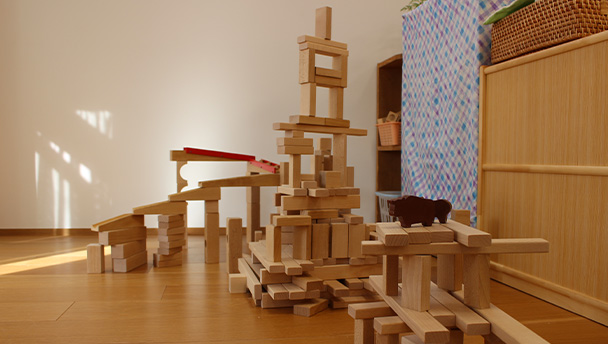

認定こども園は教育･保育を一体的に行う施設で､いわば幼稚園と保育所の両方の良さを併せ持っている施設です。 聖三一幼稚園では、2018年度に「幼稚園型認定こども園」の認定を受け、これまで保育所に通われていた保育を必要とするお子様(1歳児~5歳児まで)も含めて、 「聖三一幼稚園」の幼児教育に共感していただける全ての方が当園の教育を受けることのできる体制 を整えました。
詳しくは京都市のサイトにも情報がございますのでご確認ください。
幼稚園部 https://www.city.kyoto.lg.jp/hagukumi/page/0000255217.html
保育園部 https://www.city.kyoto.lg.jp/hagukumi/page/0000255213.html